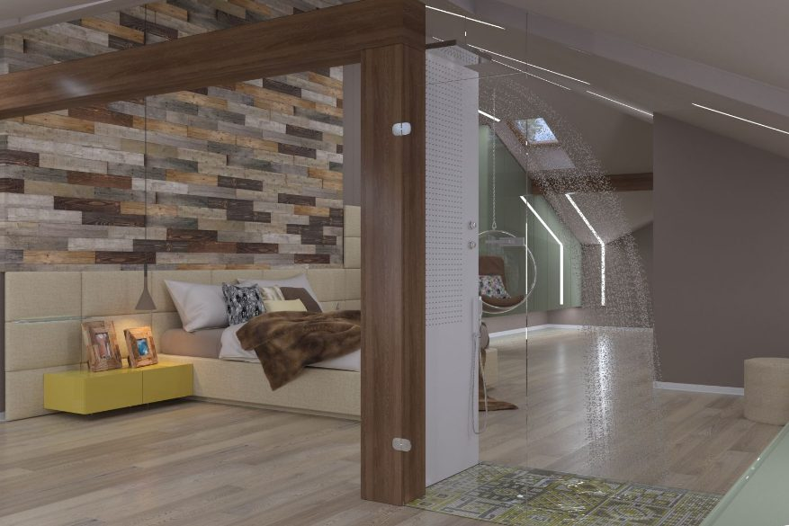
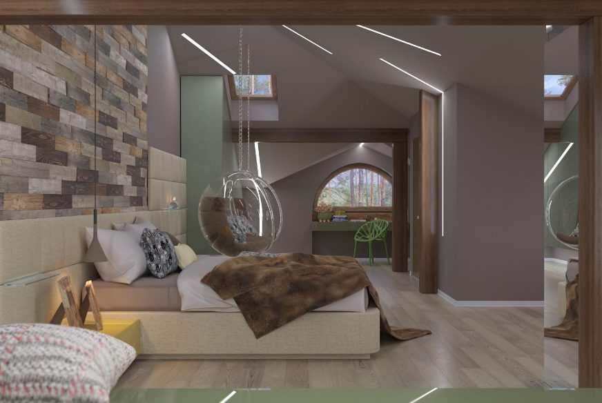
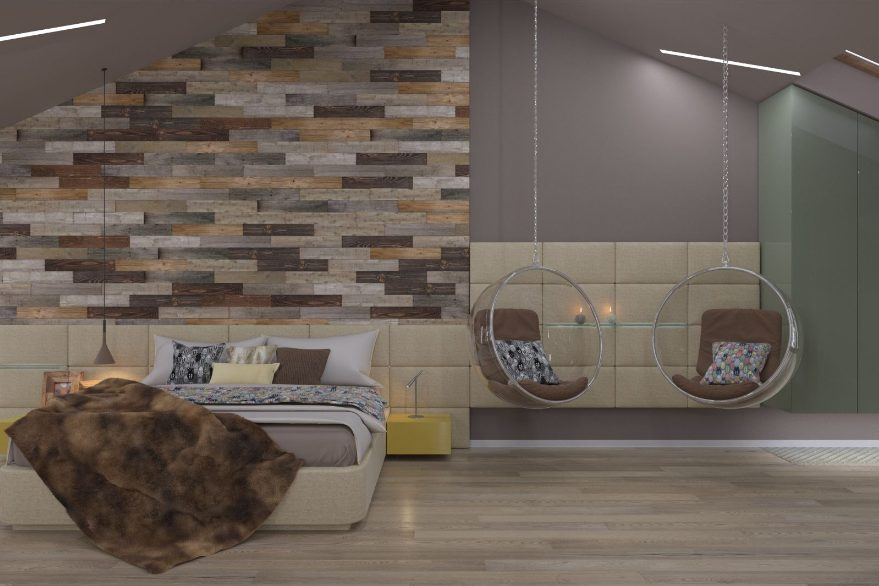
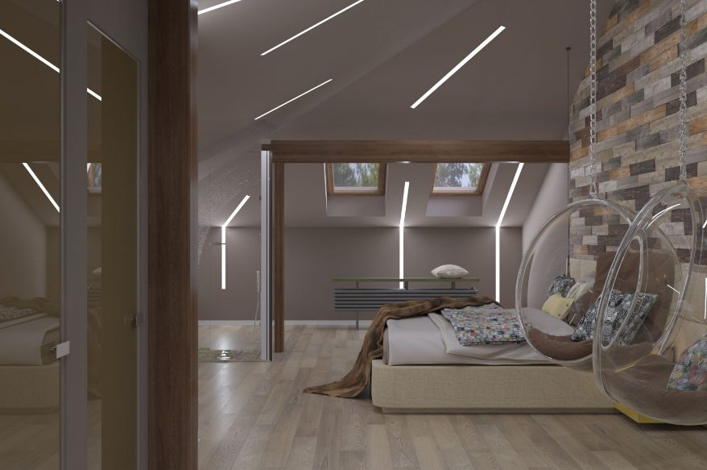
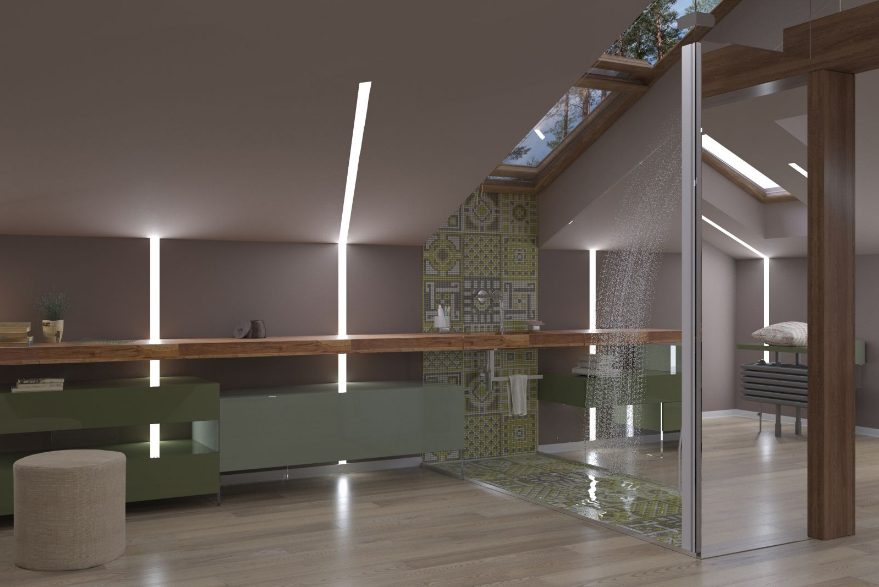
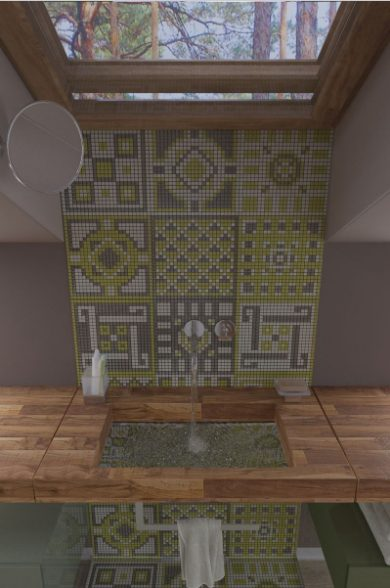
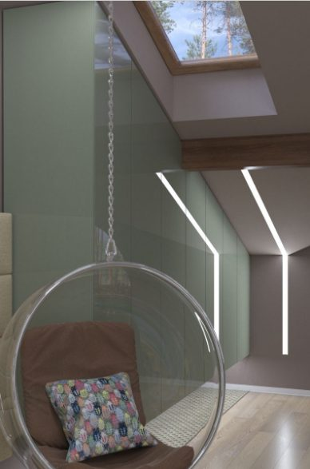
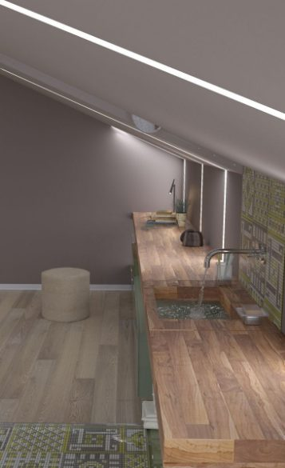

Здесь будет рассказ об объекте: для кого, что просили, что оказалось трудным, чем в итоге довольны. Пишем после разговора со Светланой - ни на одном из старых сайтов описаний не было.







